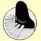

Ontdek uw
pianotalent
of talent voor het klavecimbel met behulp van de
Russische les methode, neem voor lessen contact op met mij, (Tatiana
Loginova).
Mijn lessen geef ik volgens de Russische pianoleerschool. De methode is
gericht op ieders individuele niveau en is niet afhankelijk van
leeftijd.
Ik geef klassieke pianoles en klavecimbelles aan kinderen, jongeren en
volwassenen, aan beginners en gevorderden.
De pianolessen en klavecimbellessen, worden gegeven aan de Wagenweg
62
te Haarlem.
Pianoconcerten
van Tatiana en
foto's
- projecten
| Haarlem 1996 ─── Tatiana Loginova, Klavecimbel lessen, Pianolessen, Pianoles ─── Haarlem 2025 | ||
|
|
Algemene informatie over pianoles Pianoles Haarlem ─ Mijn wijze van lesgeven is volgens de traditie van de Russische pianoleerschool. De methode is gericht op ieders individuele niveau en is niet afhankelijk van de leeftijd van de leerling. De pianolessen worden individueel gegeven, deze vinden plaats op de dag en bij uitzondering in de avond. De lokatie voor de lessen, is bij mij aan huis. De lessen starten in september, maar tussendoor aanmelden kan in overleg. Tijdens de pianoles wordt ook aandacht besteed aan muziektheorie en techniek. Er worden ook openbare leerlingenconcerten gegeven, waarbij de mogelijkheid wordt geboden om met andere instrumenten samen te spelen. Ik geef zelf soloconcerten en speel ook samen met andere musici. Loginova, Pianoles HaarlemTatiana Loginova, geboren in Rusland, studeerde aan de speciale muziekschool voor getalenteerde kinderen in St. Petersburg, hierna heeft zij haar studie als concertpianiste voortgezetaan het Rimsky-Korsakov conservatorium bij prof. Perelman. Haar studie, tevens voor begeleider en muziekdocente, voltooide zij cumlaude in 1985. Van 1987 tot 1994 gaf zij les aan de Muziek akademie van Tallinn in Estland en maakte zij concertreizen die haar met veel succes naar de Europese concertpodia voerden. Van 1995 tot 1997 studeerde Tatiana aan het Sweelink concervatorium te Amsterdam bij Anneke Uittenbosch klavecimbel en fortepiano bij Stanley Hoogland. Tatiana gaf concerten en masterclasses in Rusland, Oekraïne, Estland, Denemarken, Engeland, Duitsland en Nederland. Nadat zij zich geruime tijd met uitvoeringen op klavecimbel en pianoforte bezig hield, geeft zij sinds enige tijd haar voorliefde voor de moderne vleugel weer voorrang.Tatiana woont sinds 1995 in Nederland. |